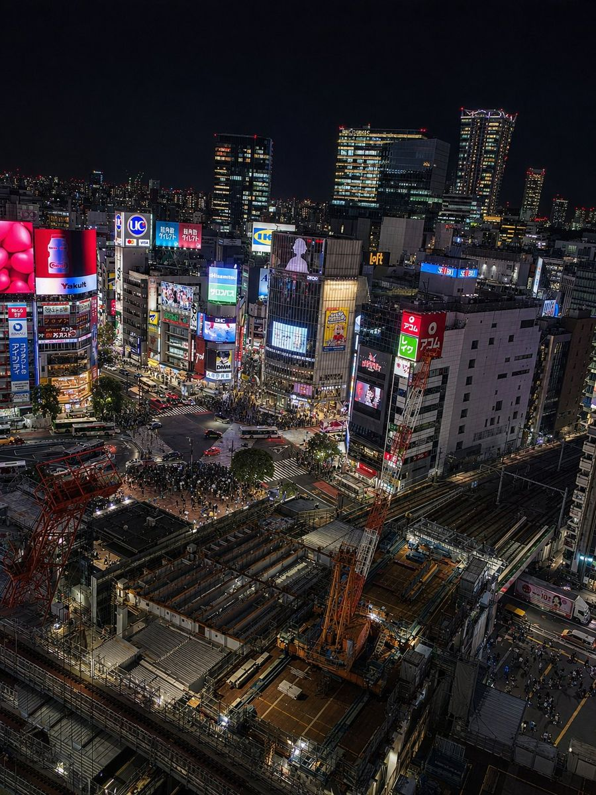

halsi
_
TOKYO · PORTFOLIO
GAMES / TOOLS / WEB
halsi
_
思いついたら、つくってみる。ゲームとツール、Webの実験をまとめました。
SELECTED WORKS
01 — 14
01
やみのもんすと
↗
02
EC倉庫
↗
03
Say Goodnight
↗
04
∞Gallery
↗
05
WebAudio SFX
↗
06
Slime Survival
↗
07
ABDUCT
↗
08
3GRAVITY
↗
09
ACID KID // 256COLOR
↗
10
ascii maze
↗
11
music pad
↗
12
dogwark
↗
13
厨二病バトル
↗
14
webtracker
↗